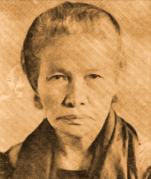

Isinalaysay nito ang kasaysayan ng buhay ng isang tao base sa mga tunay na impormasyon (Rey, 2019).

[68]
Gabriela Silang
Si Maria Josefa Gabriela Cariño Silang (Ma·rí·ya Ho·sé·fa Gab·ri·yé·la Ka·rí·nyo Sí·lang) ang unang Filipinang namunò ng isang paghihimagsik noong panahon ng pananakop ng mga Español. Siyá ang asawa ni Diego Silang at nagpatuloy ng pag-aalsa ng mga Ilokano nang mamatay ang asawa.
Ipinanganak siyá noong 19 Marso 1731 sa Santa, Ilocos Sur. Sinasabing inampon siyá ni Padre Tomas Millan, vicar general ng lalawigan, na pinakasalan siyá noong siyá ay 20 taóng gulang. Maaga siyáng nabiyuda sa unang asawa at napangasawa niyá si Diego noong 1757. Walang ulat kung nagkaroon sila ng anak.
Si Diego ang naging pinunò ng pag-aalsa sa Ilocos laban sa mga Español mula1762 hanggang 1764. Nang sakupin ng mga Ingles ang Maynila noong 1762, nakita niyá ang pagkakataón upang makapag-alsa ang mga Ilokano laban sa mga Español. Nahati ang puwersa ng mga Español sa pakikipaglaban sa mga Ingles sa Maynila at sa pangkat ni Silang sa Ilocos. Naagaw nina Diego ang mga bayan sa hilagang bahagi ng Ilocos Sur at nagpahayag siyá ng paglaya ng mga mamamayan sa pagsasamantala ng pamahalaang Español. Gayunman, isang kaibigan ni Diego, si Miguel Vicos, ang nahimok ng mga Español na magtaksil. Sa pamamagitan ni Vicos ay napatay si Diego noong 1763.
Ipinangako ni Gabriela sa asawa bago ito mamatay na pamumunuan ang nasimulang pag-aalsa. Nagpakita siyá ng gilas bilang pinunò at marami siyáng nakamit na tagumpay sa mga labanan sa Santa at Vigan sa Ilocos Sur. Ngunit sa dami ng kaaway, natalo ang kaniyang pangkat sa kalaunan. Nadakip siyá sa Abra at binitay sa Vigan noong 29 Setyembre 1763.
Nagsilbing inspirasyon si Gabriela sa isang samahang nagtataguyod ng karapatan ng kababaihan, ang GABRIELA(General Assembly Binding Women for Reforms, Integrity, Equality, Leadership, and Action). Matatagpuan din sa sentrong distritong pangkalakaran ng Lungsod Makati ang isang monumento ni Gabriela Silang.[54]

[61]
Teresa Magbanua
Si Teresa Ferraris Magbanua (Te·ré·sa Fe·rá·ris Mag·ban·wá) ang nag-iisang babae sa kasaysayan ng Kabisayaan na namunò ng mga mandirigma laban sa mga sundalong Español at Americano. Dahil sa kaniyang pakikisangkot sa digmaan sa Panay noong Himagsikang Filipino, binansagan siyang “Joan of Arc ng Kabisayaan,” paalinsunod sa bayaning Pranses na namunò sa pakikibaka laban sa mga Ingles sa Orleans, France noong 1492.
Isinilang si Magbanua noong1871 sa Pototan, Iloilo sa isang malaki at maykayang pamilya. Sina Juan Magbanua at Alejandra Ferraris ang kaniyang mga magulang, at may apat ang kapatid na babae at apat din ang kapatid na lalaki. Nag-aral muna siyá sa Colegio de San Jose sa Jaro, Iloilo bago nagtapos bilang guro sa Colegio de Santa Catalina sa Maynila. Nagturo siyá sa iba’t ibang bayan sa Iloilo hanggang madestino sa bayan ng Sara at mapangasawa si Alejandro Balderas, isang magsasaka.
Nang mag-alsa noong 1896 ang mga taga-Panay sa pamumunò ni Heneral Martin Delgado, agad sumapi sa hukbong rebolusyonaryo si Magbanua. May pag-aalinlangan siyáng tinanggap ng kaniyang amaing si Heneral Perfecto Poblador na pinunò noon ng hilagang sona sa Panay. Malakas kasi ang paniwala noon na hindi bagay o nararapat ang babae sa digmaan. Ngunit naging masugid si Magbanua at hindi naglaon ay ipinakita ang kakayahan sa labanan, lalo sa pagiging asintado sa baril at sa husay sa pangangabayo. Pinamunuan niya ang isang pangkat ng kalalakihan sa Labanang Baryo Yoting, Capiz noong Disyembre 1898 at sumabak din sa Labanang mga Burol Sapong malapit sa Sara, Iloilo. Namatay ang kaniyang mga kapatid na sina Heneral Pascual at Elias Magbanua sa Himagsikan.
Sa Digmaang Filipino-Americano, napasáma muli si Magbanua sa maraming labanan at gawaing gerilya. Nang isuko ang Panay noong 1900, nilansag niya ang kaniyang pangkat at tahimik na namuhay sa bukid kasáma ang asawa. Noong Ikalawang Digmaang Pandaigdig, nagbigay siyá ng tulong pinansiyal sa kilusang gerilya sa Iloilo. Nanirahan si Magbanua sa Pagadian, Zamboanga del Sur pagkatapos ng digmaan. Dito pumanaw ang tinatawag ng kaniyang mga kababayan na “Nay Isa” noong Agosto 1947.[55]
[60]
Josefa Llanes Escoda
Si Josefa Llanes Escoda (Ho·sé·fa Lyá·nes) ay isang tagapagtaguyod ng mga karapatang pangkababaihan sa Pilipinas, tulad ng karapatang panghalalan, at tagapagtatag ng Girl Scouts of the Philippines.
Ipinanganak si Escoda noong 20 Setyembre 1898 sa Dingras, Ilocos Norte. Siyá ang pinakamatanda sa pitóng anak nina Mercedes Madamba at Gabriel Llanes. Nag-aral siyá sa Paaralang Normal ng Pilipinas sa Maynila upang makamtan ang kaniyang digri sa pagtuturo, at nagtapos nang may mga karangalan noong 1919. Habang naghahanapbuhay bilang isang guro, nagkamit siyá ng katibayan sa pagkaguro sa mataas na paaralan mula sa Unibersidad ng Pilipinas noong 1922. Pagkaraan, naglingkod siyá sa American Red Cross. Binigyan siyá nitó ng iskolarsip sa Estados Unidos at nagtapos doon ng masterado sa sosyolohiya. Sa unang paglalakbay niya sa Estados Unidos, habang nása Women’s International League for Peace noong 1925, nakatagpo niya si Antonio Escoda, isang reporter mula sa Philippine Press Bureau na pinakasalan niya sa paglaon. Nagkaroon silá ng dalawang mga anak: sina Maria Theresa at Antonio. Noong 1925 din, nakatanggap siyá ng masterado mula sa University of Columbia.
Nagbalik si Escoda sa Estados Unidos noong 1933 upang sumailalim sa pagsasanay kaugnay ng Girl Scouts ng Estados Unidos. Pagkaraan nitó, bumalik siyá sa Pilipinas upang sanayin ang mga kabataang babae at upang maging isa sa mga pinunò sa pagtatatag ng Girl Scouts of the Philippines na nilagdaan noong 26 Mayo 1940 ni Pangulong Manuel L. Quezon.
Noong Ikalawang Digmaang Pandaigdig, nilusob ng mga puwersang Hapones ang Pilipinas. Hinuli ang asawa ni Escoda noong Hunyo 1944, at inaresto rin siyá pagkaraan ng dalawang buwan,noong Agosto 27. Ibinilanggo siyá sa Karsel 16 ng Fort Santiago, sa kulungang pinagkabilangguan din ng kanyang asawa na sumailalim sa parusang kamatayan noong 1944. Hulíng nakita si Josefa Escoda noong 6 Enero 1945 Pagdaka, kinuha siyá at ikinulong sa isa sa mga gusali ng Far Eastern University. Pinaniniwalaang pinarusahan siyá ng kamatayan ng mga Hapones at inilibing sa Libingan ng La Loma, na ginamit ng mga puwersang Hapones bilang isang bitayan at libingan para sa libo-libong Filipino na lumaban sa pananatili ng mga Hapones sa Pilipinas.[56]


[69]
Macario Sakay
Si Macario de Leon Sakay (Ma·kár·yo de Le·yón Sá·kay) ay lider- Katipunero at pangulo ng Republikang Tagalog, isang pamahalaang rebolusyonaryo na itinatag niyá upang ipagpatuloy ang pakikibáka laban sa mga Americano.
Isinilang siyá sa Tondo, Maynila noong 3 Enero 1870 at anak-mahirap. Diumano, isa siyáng barbero at sastre. Naging manggagawa rin siyá sa talyer ng kalesa at gumanap sa mga komedya. Noong 1894, sumapi siyá sa Katipunan at naging matalik na kaibigan ni Andres Bonifacio. Naging pangulo siyá ng Dapitan, isa sa pinakamalakas na konseho sa kilusang mapanghimagsik. Noong 1896, pagkaraan ng labanan sa Pinaglabanan, isa siyá sa mga pinunò ng Katipunerong naglagi sa kabundukan ng Marikina at Montalban.
Sa Digmaang Filipino-Americano, naglingkod siyáng lihim na muling tagapagbuo ng Katipunan sa Maynila. Nadakip siyá at nakalaya lámang nang magpahayag ng amnestiya ang pamahalaang Americano noong Hulyo1902. Nagtatag siyá ng mga pangkating gerilya sa Timog Katagalugan, lalo na sa mga lalawigan ng Rizal, Cavite, Laguna, at Batangas. Lumakas ang kaniyang pangkat at noon niyá ipinahayag ang Republikang Tagalog na siyá ang pangulo at si Francisco Carreon ang pangalawang pangulo. Ang Republikang Tagalog ay may sariling saligang-batas, bandila, sistema ng pagkolekta ng buwis, at regular na hukbo.
Noong 1905, sa tulong ni Dominador Gomez, isang pinagtitiwalaan niyáng lider manggagawa noon, ay nakumbinsi siyáng sumuko. Nangako ang mga Americano, sa pamamagitan ni Gomez, na bibigyan ng amnestiya ang lahat ng tauhan ni Sakay. May pangako rin noon ang mga Americano na bubuuin ang Pambansang Asamblea kung magkakaroon ng ganap na katahimikan.
Kasáma ang kaniyang mga heneral ay bumabâ si Sakay mula sa himpilan sa Tanay, Rizal. Gayunman, sa isang piging sa Cavite ay bigla at pataksil siyáng hinuli, ikinulong, at madaliang nilitis. Noong Setyembre 13, 1907, binitay siyá at ang isang matapat niyáng heneral na si Lucio de Vega. May ilang historyador na kumikilala kay Sakay bilang isa sa mga Pangulo ng Pilipinas, ngunit hindi ito kinikilala ng pamahalaan. Noong 2008, isang rebulto ni Sakay ang pinasinayaan sa Plaza Morga sa Tondo, Maynila.[57]

[59]
Encarnacion Alzona
Pambansang Alagad ng Agham si Encarnacion Alzona (En·ka-r·nas·yón Al·zó·na) bílang isang pangunahing historyador at mananaliksik sa kasaysayan. Kilalá rin siyáng masugid na tagapagtaguyod ng kagalingan at karapatan ng kababaihang Filipino. Pinangunahan niyá ang paggigiit sa karapatan ng kababaihan upang makaboto nang malaya. Bílang pagkilála sa kaniyang natatangi at makabuluhang pag-aambag sa larangan ng historyograpiyang Filipino at paggabay sa mga sumunod na henerasyon ng mga akademiko at historyador, iginawad sa kaniya ang Pambansang Alagad ng Agham (National Scientist) noong 1985.
Nilimbag noong 1932 ang kaniyang A History of Education in the Philippines 1565-1930. Ito ang kauna-unahang aklat na sinulat ni Alzona. Komprehensibong tinalalakay nitó ang pag-unlad at mga makabuluhang pangyayari sa sistema ng edukasyon at kultura sa Pilipinas mula sa pananakop ng mga Español hanggang sa kolonyal na paghahari ng Estados Unidos. Ayon sa mga dalubhasa, ang akdang pangkasaysayan ni Alzona ay maituturing na pinakakompleto at lahatang-panig na pananaliksik hinggil sa kalagayan ng edukasyon. Naging pangunahin din siyáng tagasalin at tagapagpaliwanag ng mga akda ni Rizal.[58]

[62]
Maria Orosa
Imbentor at tagapanguna sa larangan ng teknolohiya sa pagkain, isang kemiko at parmasiyutiko si Maria Y. Orosa (Mar·yá I O·ró·sa). Isa sa mga imbensiyon niya ang pinulbos na kalamansi, ang “calamansi nip,” at pinagbuhatan ng komersiyal na calamansi juice ngayon. Imbento niya ang “soyalac,” ang pinulbos na soya at nagligtas sa maraming bilanggong kulang sa pagkain noong panahon ng Japanese. Inimbento din niya ang banana ketsap, banana flour, cassava flour, mga alak mula sa katutubong prutas, at jelly mula sa bayabas, santol, at ibang prutas.
Si Maria ay isinilang noong 29 Nobyembre 1893 sa Taal, Batangas kina Simplicio Orosa y Agoncillo at Juliana Ylagan. Sa Batangas siyá nagtapos ng elementarya at sekundarya at nag-aral ng parmasya sa Unibersidad ng Pilipinas. Noong 1916, ipinadalá siyáng iskolar sa Estados Unidos at nagtapos ng batsilyer sa agham ng kemistring parmasyutiko sa University of Seattle noong 1917, BS sa kemistri ng pagkain noong 1918, BS sa parmasya noong 1920, at marterado sa parmasya noong 1921.
Pag-uwi, nagturo muna siyá bago pumasok sa Bureau of Science noong 1923. Naglibot siyá sa buong bansa para itaguyod ang wastong nutrisyon at wastong pagiimbak ng pagkain. Dahil sa kaniyang sipag at liderato, ipinadalá siyá sa ibang bansa para mag-aral ng pagproseso at pagdedelata ng pagkain. Pagbalik, hinirang siyáng punò ng dibisyon sa home economics ng Bureau of Science. Itinatag niya ang Homemakers Association of the Philippines. Nang sumiklab ang digmaan, sumali siyá sa pangkat gerilya, nagkaranggong kapitan, at naging trabaho ang pagpapakain sa mga sugatan at maysakit.
Sa panahon ng liberasyon, tinamaan siyá ng ligaw na bala hábang nagtatrabaho sa gusali ng Bureau of Plant Indsutry sa Malate. Dinalá siyá sa Malate Remedios Hospital para magamot. Ngunit tinamaan ng bomba ang ospital at isang shrapnel ang tumimo sa puso ni Maria na ikinamatay niya noong 13 Pebrero 1945. Bílang parangal, ipinangalan sa kaniya ang isang kalye sa Maynila gayundin ang gusali ng Bureau of Plant Industry.[63]

[65]
Napoleon Abueva
Itinanghal na Pambansang Alagad ng Sining para sa Eskultura noong 1976 si Napoleon V. Abueva (Na·pol·yón Vi Ab·wé·va). Sa edad na 46, siyá ang pinakabatang nagkamit ng parangal na ito. Kinikilála rin siyáng “Ama ng Makabagong Eskultura sa Pilipinas.”
Bihasa si Abueva sa iba’t ibang larangan ng eskultura. May kakayahan din siyáng gamitin ang iba’t ibang uri ng materyales tulad ng kahoy, metal, at bato. Ilan sa mga obra ni Abueva na matatagpuan sa mga espasyong publiko ay ang sumusunod: Transfiguration (1979), isang matayog na pigurang Kristo sa Eternal Gardens Memorial Park sa Caloocan; magkabilaang krusipiho, altar (1957) at busto ni Padre Delaney sa Chapel of the Holy Sacrifice sa kampus ng UP Diliman; labing-apat na estasyon ng krus ng Kapilya ng Paaralang Claret sa Teacher’s Village, Diliman at ng EDSA Shrine; Kaganapan (1953), itinuturing na pinakamaestilo sa kaniyang mga likha; Siyam na Musa sa UP Faculty Center (1994); rebulto ni Teodoro M. Kalaw sa harap ng Pambansang Aklatan; marmol na miyural sa Bantayog ng mga Bayani sa Bundok Samat, Bataan; at Sun- burst sa Peninsula Manila Hotel (1994).
Maaga siyáng naulila ng mga magulang na sina Kongresista Teodoro Abueva ng Tagbilaran, Bohol at Purificacion Veloso ng Cebu na pinaslang ng mga Japanese noong 1944 dahil sa pagiging mga gerilya. Nagtapos siyá ng Master sa Sining sa Cranbrook Academy of Art sa Michigan, USA noong 1955 bílang iskolar ng Fulbright/Smith-Mundt. Nagpatuloy pa siyá ng pag-aaral ng Ceramics sa University of Kansas at Kasaysayan ng Sining sa Unibersidad ng Harvard sa Estados Unidos.
Noong 1978, hinirang si Abueva bilang Dekano ng College of Fine Arts sa Unibersidad ng Pilipinas, at nanatili sa posisyong ito hanggang 1989. Naging kabiyak niyá si Sergia Valles na naging Kalihim ng National Center for Mental Health. May tatlo silang anak, sina Amihan, Mulawin, at Duero.
Kabílang sa iba pa niyáng nakamit na parangal ang mga sumusunod: mga gawad mula sa Art Association of the Philippines (1951, 1952, 1953, 1954, 1958, 1974, at 1977); Republic Award para sa Eskultura (1959); Ten Outstanding Young Men of the Philippines (1959); Cultural Heritage Award (1966).[64]

[67]
Artúro R. Luz
Arturo Rogerio Dimayuga Luz ang buong pangalan, si Artúro Luz ay isang modernistang pintor at eskultor. Kinilala siya sa kaniyang minimalista subalit magarang mga pintura, eskultura, guhit, print, etching, larawan, tapestry, collage, at iba pang nilikha sa loob ng mahigit kalahating siglo. Iginawad sa kaniya ang Pambansang Alagad ng Sining sa Sining Biswal noong 1997.
Mahahati sa tatlong hanayan ang kaniyang mga obra. Ang bawat isa ay kumakatawan sa yugto ng kaniyang maningning na karera. Noong maagang bahagi ng dekada 50, makikita ang impluwensiya ni Rufino Tamayo, isang Mehikanong ekspresyonistang pintor, sa kaniyang mga nilikhang tulad ng Candle Vendors (1951, oleo sa marine plywood) at Street Musicians (1952). Noong 1957-1964 naman ay impluwensiya ni Paul Klee, isang Alemang pintor, ang katangian na makikita sa kaniyang Carnival and Cyclist Series. Ang hulíng mga taon ng dekada 60 ay kakikitahan ng malalaking eskultura na yari sa marmol, kahoy, at metal. Noong 1969, dalawang krusyal na resolusyon ang tinupad ni Luz–una, ang paglipat mula piguratibo patungong abstraksiyon; at ikalawa, ang pagbibigay-diin sa eskultura, gaya sa nakatanghal sa Philippine International Convention Center (Grid, stainlees steel), Westin Philippine Plaza Hotel (Interlocking Forms, concrete), Ayala Museum at Ateneo De Manila University. Maging ang mosaic na sahig ng Church of the Holy Sacrifice ng UP ay disenyo ni Luz.
Nagkamit siyá ng iba’t ibang parangal, gaya ng Republic Cultural Heritage Award (1966); Order of Chevalier des Arts et Letres mula sa pamahalaang Pranses (1978); Gawad CCP para sa Sining Biswal (1989); at Diwa ng Lahi Award, Lungsod Maynila (1993).
Isinilang siyá noong 29 Nobyembre 1926 sa Maynila kina Valeriano K. Luz at Rosario Dimayuga. Nag-aral siyá sa University of Santo Tomas School of Fine Arts sa loob lamang ng tatlong buwan. Noong 1994, nakamit niya ang diploma mula sa California College of Arts and Crafts sa Oakland para sa tatlong taóng masusing pag-aral sa kulay, disenyo, at pagguhit. Kumuha siyá ng karagdagang pag-aaral sa Brooklyn Museum Art School sa New York at sa Académie Grande Chaumière sa Paris. Ikinasal siyá kay Teresita Ojeda at may apat na anak. Naging punòng ehekutibo siyá ng Design Center Philippines (1973–1987), direktor ng Metropolitan Museum of Manila (1976–1986), at may-ari ng Luz Gallery.[66]